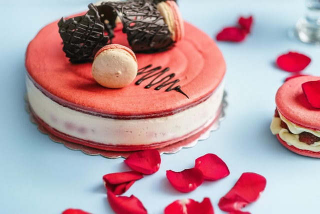

"La Nona Dora"
"La Nona Dora"


Elegí la que mas te guste

Preparada a base de ingredientes simples, deleita a grandes y chicos gracias a su sencillez y a su combinación de texturas crujientes, suaves y húmedas.

Es una receta clásica que tiene cientos de años de antigüedad: sus orígenes se remontan al siglo XVI y su nombre hace referencia a la región alemana famosa por sus cerezas agrias, utilizadas para fabricar el kirsch.